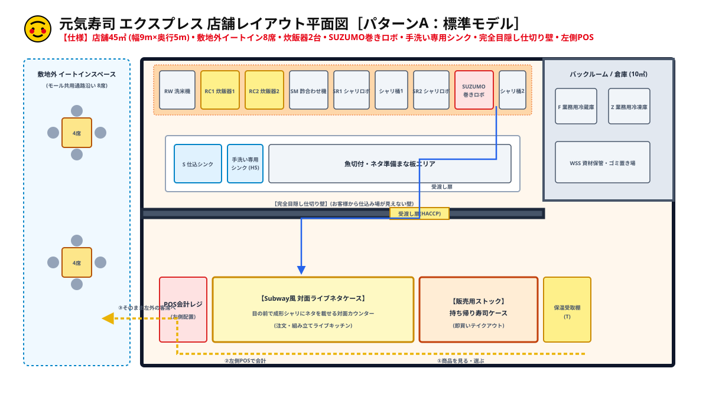

元気寿司 エクスプレス 平面図 確定3パターン
QSR / rayout 保存版 • 日本語完全表記 • 条件完全合致仕様
GENKI SUSHI EXPRESS 平面図 3パターン
敷地外イートイン(8席)
炊飯器 2台
SUZUMO巻きロボ新設
手洗い専用シンク 1台
目隠し完全仕切り壁
左側POS・左外席移動動線
パターンA［標準平衡モデル］
左側にSubway風対面ネタケース(2.5m)、右側に持ち帰りストックケース(1.8m)、左端にPOSレジを配置。お客様は右/中央から商品を選び、左端のPOSで会計してそのまま左外側の客席(8席)へ進む最もスムーズな一方向動線。
